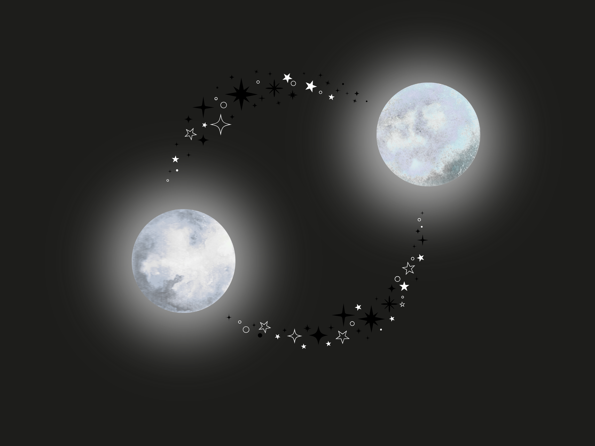

"Characterization of Double White Dwarf Star Systems"
Department of Physics and Astronomy, University of Oklahoma | August 2026 – Present
Department of Physics and Astronomy, University of Oklahoma | August 2026 – Present
Characterizing double white dwarf systems through multi messenger observations. Analyze multi messenger datasets to identify compact binary candidates for follow-up observational studies.
